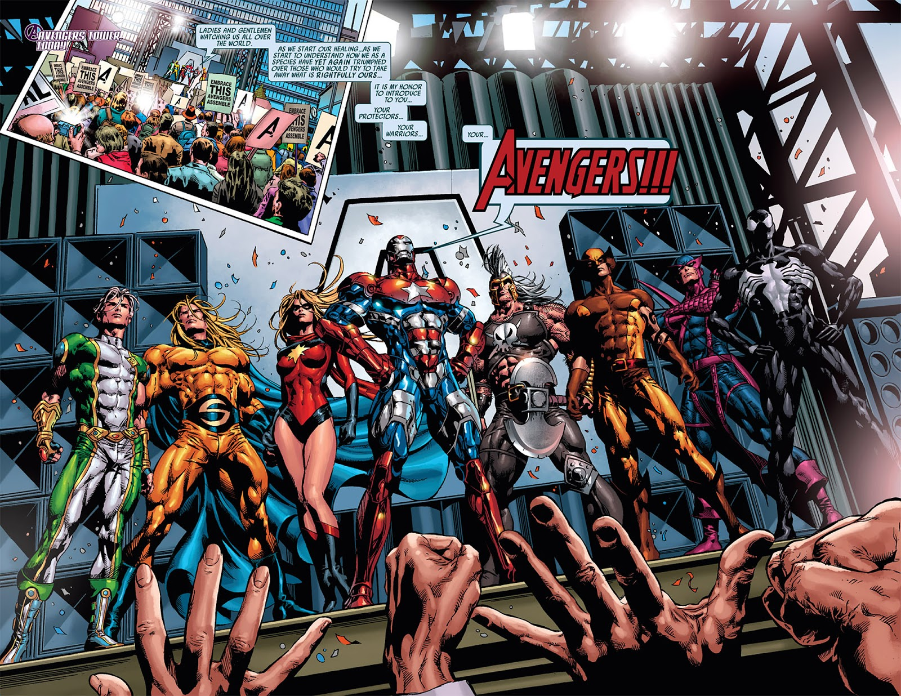

Arcos
Principais Sagas dos Vingadores
Guerra Kree Skrull
Duas raças alienígenas antagônicas, que há muito escreveram uma história em comum de guerras e dominação, voltaram certa vez suas atenções para um pequeno planetinha de civilização um tanto quanto rudimentar. Esse planeta, chamado por seus habitantes de Terra, era considerado por ambos os lados como um ótimo posto estratégico a ser dominado. Assim, em diferentes épocas, as duas raças tentaram tomar aquele lugar, mas sempre foram impedidas pelos fabulosos feitos dos heróis terráqueos. As tentativas destes, no entanto, não pararam e acabaram por culminar na aclamada Guerra Kree-Skrull.
Escrita entre 1971 e 1972 por Roy Thomas, a história foi surgindo sem qualquer pretensão de tomar a repercussão que teve até os dias de hoje. Para o escritor, que veio a ser editor da Marvel por dois anos logo depois desse arco, a Terra poderia ser comparada apenas a uma das ilhas do Pacífico durante a Segunda Guerra Mundial. Ou seja, apenas um pequeno pedaço de todo o cenário de um evento maior na perspectiva das duas raças expansionistas, porém que poderia causar o fim de toda humanidade.
O ponto central desta Guerra acabou sendo um "exilado" de um dos mundos, o herói de origem Kree Mar-Vell, que viria a se tornar um apaixonado por esse planeta e verdadeiro defensor do lugar. Em Vingadores 89, Mar-Vell que assumiu o codinome de Capitão Marvel, tinha acabado de escapar da sua imposta prisão na Zona Negativa, que dividia sazonalmente com o jovem Rick Jones. Com a ajuda do portal criado por Reed Richards para escapar da Zona N, ele e Rick puderam existir ao mesmo na Terra, porém havia um preço. Desde que escapou da prisão, Mar-Vell passou a portar uma forte radiação desconhecida que colocaria não só sua vida em risco como a de toda o planeta.
Desta maneira, os Vingadores – formados na época por Visão, Feiticeira Escarlate, Mercúrio e Clint Barton, que assumiu o codinome de Golias após ficar preso num tamanho muito maior que o seu – juntamente com Rick Jones decidiram capturar o herói de qualquer maneira e buscar uma cura. Sob as instruções do doutor Donaldson e utilizando a capacidade de armazenar energia solar do Visão, eles puderam aparentemente retirar toda carga radioativa acumulada pelo Capitão Marvel. Contudo, esse era apenas um dos perigos que ameaçavam a vida de Mar-Vell naquela época.
Em Hala, Capital do Império Kree, Ronan, o Acusador, adentra a câmara que abriga a Inteligência Suprema e anuncia a tomada do poder local. E o primeiro decreto do novo governante Kree é vingar-se de seu proclamado inimigo, Mar-Vell, a quem acusa de traição. Assim, o Acusador ativa um Vigilante Kree, uma máquina de combate com poderes incrivéis, para atacar Mar-Vell e todos que se puserem no caminho. E mesmo com a presença dos Vingadores, não foi possível impedir que o herói kree fosse levado para um destino ignorado.
Atendendo uma nova emergência para salvar Hank Pym e sua esposa Janet, os Vingadores acabam deparando-se mais uma vez com o Vigilante. A máquina, no entanto, não veio sozinha a Terra. Ronan decidiu vir pessoalmente para não só se vingar de Mar-Vell, como também para destruir toda a civilização, seguindo o chamado Plano Atavus. Segundo Ronan, a Terra passou a se tornar um problema (ou uma futura ameaça em potencial ao Império Kree), e a solução seria reverter todo o seu processo evolutivo até o dia em que pela primeira vez os Krees pousaram neste planeta antes de começar a interferir nele.
O plano do Acusador sequer chega a tomar grandes proporções. No auge da grande batalha, Ronan recebeu uma mensagem de seu povo alertando que os seus mais árduos inimigos, os Skrulls, atacaram o Império. Assim, ele deixou de lado a luta com os Vingadores e partiu para salvar o seu mundo.
Esse evento, no entanto, não passou batido na Terra. Não demorou muito para que o assunto chegasse até a televisão e oportunistas decidissem tirar proveito da situação. Na TV, foi anunciado que o fervoroso político H. Warren Craddock acabou se tornando o novo diretor da comissão de atividades alienígenas e ele prometeu agir de forma enérgica contra os invasores. E ele já tinha um primeiro alvo: Mar-Vell.
Diante disto, os Vingadores decidiram investir em outro plano. Acabam recebendo uma oportuna visita da Capitã Carol Danvers que ofereceu abrigo ao alienígena em sua fazenda particular e os Vingadores ajudaram os dois a fugir dos caças da SHIELD. Todavia, essas ações acabaram se voltando contra os heróis que são julgados e odiados pela opinião pública. Chega ao ponto de que no final da edição 92, três dos Vingadores originais voltaram até a velha mansão para desativar o time.
Grandes mudanças, no entanto, ainda estavam por vir. A partir da edição 93, o desenhista Neal Adams assumiu no lugar do veterano Sal Buscema e estreou numa história que viria a ser considerada uma das mais clássicas dos Vingadores. Nela, Visão surgiu agonizante na mansão dos Vingadores e caiu inconsciente, deixando várias perguntas no ar. Coube a Hank Pym vestir mais uma vez seu traje de Homem-Formiga, realizar uma fantástica aventura dentro do corpo do andróide para reativá-lo e assim solucionar aquele mistério.
Aos despertar, Visão começou a explicar a Hank, Thor, Homem de Ferro e o Capitão América o que aconteceu desde os eventos da última edição. Assim, descobriu-se que os Vingadores originais que debandaram o grupo na edição 92 eram impostores e que alguma coisa de muito errado havia acontecido na fazenda de Carol Danvers.
Em sua história, Visão elucidou que eles a princípio foram estranhamente atacados por vacas, que depois se metamorfosearam em três dos integrantes do Quarteto Fantástico. O andróide foi o único capaz de escapar se desmaterializando pra baixo da terra e usando suas últimas forças para fugir dali.
O mistério por trás do ataque do Quarteto Fantástico poderia ser facilmente desvendado pelos leitores que compraram a Biblioteca Histórica Marvel do Quarteto Fantástico 1, em que na segunda história vemos a primeira vez que Skrulls ameaçaram a Terra e foram derrotados pelos heróis. Os aliens terminaram hipnotizados por Reed Richards, que os fez acreditarem por longo tempo que eram meras vacas.
Pelo que mostra a edição, três desses aliens acabaram se desvencilhando daquela humilhação e juntaram-se ao Super-Skrull para arquitetar seus planos e roubar um antigo segredo Kree. Obviamente, eles não conseguiram realizar tal feito, sendo impedidos pelos Vingadores. Os heróis acabaram capturando três dos vilões transmorfos e evitaram que eles roubassem o segredo da Omnionda, mas mesmo assim não puderam salvar Mar-Vell, a Feiticeira Escalarte e o Visão, que foram levados como reféns.
A vingança do Super-Skrull ainda ia muito mais longe. Antes de partir para o Império Skrull, ele tentou explodir a capital dos Inumanos na Terra, Attilan, mas não houve sucesso. A cidade inumana estava misteriosamente protegida por um domo negro e resistiu à bomba avassaladora. Restou ao super-soldado skrull apenas levar seus prisioneiros ao Imperador, mas mal imaginava ele que seria traído pelo seu próprio governante.
Uma vez de posse de seus prisioneiros, o Imperador Skrull ameaçou extinguir a vida dos Vingadores se o segredo da Omnionda finalmente não lhe fosse entregue. Essa foi a única maneira que o ditador encontrou para que finalmente Mar-Vell aceitasse trabalhar na construção de tal poderoso artefato.
Já na Terra, a situação só piorou para os Vingadores. Depois de mais uma ameaça alienígena vir à tona, H. Warren Craddock lança contra os Vingadores os Mandróides, ameaçadoras armaduras operadas por soldados que justamente foram treinados para lidar especificamente contra o grupo.
E se não bastasse essa batalha, outro contratempo surgiu. Os Vingadores foram requisitados para ajudar Triton e Raio Negro a derrubar o novo governante de Attilan, o enlouquecido Maximus, que prendeu todo aquele povo numa grande redoma negra. Maximus, irmão de Raio Negro, só conseguiu tal intento com a ajuda externa de Krees, revelando mais uma vez que as intenções daquele povo para com a Terra não haviam cessado.
O grupo consegue colocar Raio Negro de volta ao poder, contudo, têm mais uma perda. Rick Jones, o jovem vingador honorário é misteriosamente levado pelos Krees. Aparentemente, a Inteligência Suprema Kree reservou ao humano um destino muito maior nesta batalha. Já os Vingadores, que até então só se defendiam, não vêem outra escolha a não ser entrar de vez nessa Guerra absurda.
Da edição 96 em diante, Roy Thomas e Neal Adams nos colocaram na verdadeira frente de batalha. Praticamente perfurando as linhas de combate skrulls, Capitão América, Thor, Homem de Ferro, Visão e o Golias chegaram até a nave capitã inimiga e entraram em contato com o Imperador, tomando ciência de seu ardiloso plano. Mas foi graças à perspicácia de Mar-Vell e aos planos secretos da Inteligência Suprema Kree, que os terráqueos tiveram chance de rechaçar esse conflito que usou a Terra como um dos campos de batalha.
É nesta edição que pela primeira vez vemos a manifestação da Força do Destino, capaz de manipular o espaço e o tempo. Sob orientação a Inteligência Suprema, Rick usou tal poder e convocou heróis do passado, que ele só conhecia através de seus gibis, para lutar ao seu lado. Assim, ele trouxe o Capitão América, Namor, Caveira Flamejante e muitos outros personagens dos anos 40 para enfraquecer as fileiras Krees.
A extensão do poder da Força do Destino em Jones chegou até mesmo a níveis incompreensíveis. Mediante instrução da Inteligência Suprema, Rick foi capaz de paralizar toda a fronta Kree e Skrull que estava em combate.
O alcance dos dons de Rick foram ainda mais longe e chegaram até o planeta Terra. Lá, ele acabou atingindo a mente de Warren Craddock, que se revelou como sendo na verdade um Skrull transformado (Na verdade, o quarto skrull que escapou do Quarteto Fantástico em sua segunda história, como mais tarde viria a ser explicado). A farsa de Craddock destinou o seu fim e, conseqüentemente, sua campanha voraz contra os outros alienígenas.
Os Vingadores retornaram a uma Terra, agora livre do perigo. Krees e Skrulls ganharam mais uma vez uma trégua, mesmo que forçada. Já o Capitão Marvel optou por se unir ao exaurido corpo de Rick Jones afim de salvá-lo. E assim a primeira grande ameaça de invasão da Terra foi encerrada... ou, assim, acreditávamos.
Guerras Secretas
Guerras Secretas é o nome de uma mega série de quadrinhos produzida pela Marvel Comics nos anos 1980 que prometia revolucionar o universo de heróis da Empresa.
A mega saga começa quando a entidade chamada Beyonder promove uma batalha nunca antes vista entre os maiores heróis e vilões do universo Marvel, oferecendo ao grupo vencedor, como prêmio, a realização de todos os seus desejos.
Poucas séries na cronologia Marvel foram tão importantes como Guerras Secretas, uma imensa história em 12 partes, envolvendo os principais heróis e vilões do universo. A lista de convocados envolve medalhões do porte de Homen-Aranha, os X-Men e Hulk, do lado dos heróis, e Doutor Destino, Lagarto, Ultron e Galactus do lado dos vilões.
A premissa é simples: uma entidade cósmica chamada Beyonder cria um planeta e transporta para lá os seres mais poderosos da Terra, dividindo-os em dois grupos. Sem mais delongas, Beyonder diz : “Destruam seus inimigos e todos os seus sonhos serão realizados! Nenhum de seus desejos me é impossível de realizar!” Pronto. A confusão está armada e brigas começam a surgir dos dois lados.
Do lado heróico, o motivo para a discussão é a presença de Magneto, o arquiinimigo dos X-Men, que não é bem recebido para lutar do lado de Capitão América e companhia, por mais que Charles Xavier, o principal antagonista do mestre do magnetismo, defenda sua presença no grupo. Do lado do mal, a disputa pelo poder e pela liderança do grupo é o estopim de suas discussões. Também o fato de Galactus estar colocado ao lado dos vilões é discutível, uma vez que o personagem é uma entidade cósmica, longe das definições de “bem” e “mal”.
Esta série é famosa, principalmente pelas repercussões que teve na cronologia dos personagens. A mais afetada foi, sem dúvida, a do Homem-Aranha, que encontrou, no planeta criado por Beyonder, o simbionte que se tornaria o seu famoso uniforme negro. Empolgado com uma roupa nova que não rasgava, que se tornava qualquer tipo de roupa civil e que, principalmente, produzia sua própria teia, o Homem-Aranha traz este uniforme de volta à Terra e continua a usá-lo em suas aventuras, mesmo após o fim da guerra de Beyonder, culminando com a criação do personagem Venom.

Publicação no Brasil
Conhecida também pelo título original americano, Secret Wars, foi lançada no Brasil em 1986 pela Abril Jovem. Fazia parte de uma campanha publicitária mundial da Marvel, com o licenciamento de brinquedos da série. Como os direitos de licenciamento da linha de brinquedos no Brasil já havia sido concedida à Gulliver, empresa famosa no país por ter sido fabricante de brinquedos Marvel e DC nos anos 70 e 80, a série em quadrinhos precisava ser lançada no Brasil. No entanto, a cronologia de vários heróis no Brasil estava defasada em relação à cronologia americana. A solução da Abril foi alterar partes da história, suprimindo inclusive personagens como Vampira e Capitã Marvel, e também modificando o final da saga, para que tudo se encaixasse no momento em que a Marvel estava situada no Brasil.
Anos depois, já na época onde a história se encaixaria na cronologia, a Abril lançaria um resumo dessa história, na revista Capitão América nº 119, na forma como ela foi originalmente concebida. Anos mais tarde, na revista A Teia do Aranha, a Abril relançaria na íntegra as Guerras Secretas originais. Mais recentemente lançada também pela Editora Panini
Trilogia do Infinito
"Desafio Infinito" é uma minissérie em três partes do (então) expert em histórias cósmicas Jim Starlin, àquela minissérie se seguiram outras duas, chamadas, em ordem cronológica, "Guerra Infinita" e "Cruzada Infinita". Juntas, as três obras formaram a "Trilogia do Infinito", e contavam a saga do titã louco Thanos e seu amor pela Morte e os esforços dos herois em detê-lo (e depois, em deter as consequências das suas declarações de amor.)
Mas a verdade é que, colocada de lado toda a questão cósmica e fantástica, algo se pode aprender dessa série, algo relevante para a vida. É disso que quero falar.
Como disse anteriormente, a primeira fase da "Trilogia do Infinito" chama-se "Desafio Infinito". Nela, ficamos sabendo do amor (amor mesmo) de Thanos pela Morte e do seu plano para conquistar a atenção e o amor de sua amada: matar metade da população do Universo. Para executar tão hercúlea tarefa, ele precisa reunir as seis Jóias do Infinito (Espaço, Mente, Alma, Realidade, Tempo e Poder), artefatos poderosíssimos que, juntos, tornam o portador onipotente. Durante a trama, Thanos consegue alcançar seus objetivos: une as Jóias na chamada "Manopla do Infinito" e, com elas, dissipa metade da população do Universo. Isso faz com que os heróis da Terra sobreviventes, bem como os campeões de outros mundos (como o Starfox, irmão de Thanos, ou Adam Warlock) se empenhem em deter o vilão e reorganizar tudo.
Naturalmente, depois das mais dramáticas batalhas, os heróis, tendo sido ajudados pelo acaso (a traição da neta de Thanos, Nebula), conseguem se apossar da Manopla e, em poder de Adam Warlock, ele a usa para consertar o caos gerado pelo titã louco, que acaba exilado.
Para evitar que tamanho caos se repita, Warlock toma duas decisões: primeiro, desfaz a manopla, e distribui as Jóias entre um grupo intergalático conhecido como "Guarda do Infinito", ficando cada membro com uma jóia (Gamora com a jóia do Tempo; Pip com a jóia do Espaço; Drax, o destruidor, com a jóia do Poder; Serpente da Lua com a jóia da Mente e o próprio Warlock com a jóia da Alma. A última jóia, da Realidade, foi entregue a um sexto e secreto membro, para que não fosse retomada). Já na segunda decisão, Warlock decide expurgar de si todo o bem e todo o mal, restando a plena neutralidade. Das duas decisões, esta é a que acarretará os maiores danos.
Pois então, ao "Desafio Infinito" se seguiu a "Guerra Infinita". Nela, vários heróis e vilões começam a ser atacadados por clones deturpados e malignos de si mesmos, as "contrapartes" (a mais famosa é a do Aranha, com seis braços e duas pernas). Inclusive Thanos (que vivia uma vida de fazendeiro no exílio pós-Desafio).
A verdade é que a parte má de Warlock, chamada Magus, intentava contra o universo, e só a improvável união dos heróis, da Guarda do Infinito e de Thanos poderiam (e fatalmente conseguiuram) vencê-lo.
Como se trata de uma trilogia, a terceira parte é um tanto óbvia: trata do embate dos heróis contra o lado bom de Warlock, chamada Deusa. Mas peraí: porque os heróis enfrentariam a parte boa de Warlock ainda se achando certos?
Em "Cruzada Infinita" descobrimos que a bondade de Warlock se personificou na Deusa que, criando o Ovo Cósmico (uma arma de poder imenso, quase equivalente à Manopla do Infinito) e convocando para seu exército todos os heróis que tinham alguma relação com o divino (Tempestade dos X-men e Thor, por exemplo) pretendia expurgar todo o mal do universo, iniciando uma verdadeira cruzada.
O problema, conforme descobrem os heróis sob o comando de Warlock, é que ao fazer isso a Deusa dizimaria toda a realidade. Era preciso evitá-la, claro.
Provavelmente (ou melhor, muito provavelmente) o que vou falar agora passe longe de ser o objetivo de Jim Starlin quando escreveu "A Trilogia do Infinito", mas o que é uma obra senão um suporte para múltiplas interpretações?
Diferente da primeira minissérie, as continuações ("Guerra" e "Cruzada" que são a mesma coisa em termos, com a diferença que a cruzada é uma guerra que se supõe santa) deixam de lado o niilismo de Thanos e seu amor impossível para se focarem no drama de Warlock, tendo de arcar com a decisão mais errada de sua vida, ainda que não menos bem intencionada. Onipontente, ao expurgar de si o bem e o mal, Adam esperava ter clareza em todas as decisões que, como Guardião da Jóia da Alma, teria de tomar dali em diante.
Mas a pergunta é: retirada a essência dual do homem, o que sobra? E mais, descompensada pelo reflexo invertido, o bem ainda é bom e o mal ainda é mau?
Assunto tangente no grande arco de Starlin, a conclusão que se chega é que, mesmo um sujeito que é considerado o homem perfeito (assim Warlock, que já se chamou simplesmente "Ele", é descrito) não pode existir de forma neutra. Afinal de contas, uma neutralidade humana (ou super humana) é impossível pois destrói a base: neutralizado, o homem se desumaniza. Vira uma pedra ou um metal, qualquer coisa que não um homem.
Esse dilema já estava presente lá nos estudos de Husserl, lá nos meados do século XIX, já apontavam: pode-se procurar (e imprimir) neutralidade em tudo, desde que o homem não esteja no meio. Perceba que Husserl, ao fundar sua fenomenologia, não pregava a dualidade bem/mal no homem (isso é coisa do Jung), mas a não neutralidade. Toda consciência escolhe, impõe significado próprio, altera e modifica. O mundo só pode ser neutro se não estivermos nele ou se considerarmos que, parte do mundo, nossa capacidade de "desneutralizar" as coisas é tão natural que só considerando-a é que podemos chegar a um estado "neutro".
Ao isolar o bem e o mal, Adam Warlock queria sempre decidir pelo "certo". Sem a noção de "errado" (provavelmente oriunda do bem e do mal conforme o cria) é possível ter certeza do certo?
Pode ser que você pense toda essa discussão como inútil, por dois motivos: o primeiro, porque Adam Warlock é um personagem ficcional. Segundo porque, mesmo sendo ficcional, ele sequer é humano! Bem, para a primeira questão, vou sim a Carl Gustav Jung e Joseph Campbell, este especialista em mitologia.
Na opinião de ambos, um mito, uma história ficcional, fantástica e que encerra em si uma explicação para algo do mundo, serve também como tradutora de um conflito humano. Algo indiretamente indizível pode ser traduzido, representado num mito.
Sim, você não é bobo e percebeu que eu vou tomar a série de Jim Starlin como um mito. Sendo um, que questão humana ele encerra em si?
Justamente a dualidade bem e mal. Quem não se angustia quando, querendo fazer o bem, acaba causando o mal? Ou, quando se percebe desejando realmente o mal a outrem? Quem não desejou conseguir ser simplesmente justo? Quem nunca quis para si a neutralidade plena? Jim Starlin encerra o caráter mítico de seu trabalho justamente ao colocar essas dúvidas no coração de Adam Warlock. Se no "Desafio..." Thanos fez tudo o que fez apenas por uma paixão, por amor, Warlock não quer repetir nada disso e se desumaniza.
Engraçado é que essa desumanização inverte as posições: nas séries subsequentes ao "Desafio...", Thanos (que conservara sua humanidade) deixa de ser o vilão e, redimido, é peça fundamental para o sucesso dos heróis (inclusive, é ele o depositário secreto da Jóia da Realidade), enquanto que o todo o problema foi gerado pelo próprio (e deseumanizado) Adam Warlock! E, ironia das ironias, Jim Starlin põe essa coisa não humana que Adam Warlock se tornou pra cuidar de qual jóia? A da Alma, oras!
Mas vamos inverter um pouco as posições. Quem nunca se percebeu querendo "corrigir" os defeitos de alguém? Lhe retirar o mau e usufruir apenas do que há de bom a se oferecer? Quantas vezes a gente não quis isso de nós mesmos?
O problema é que o ser humano, como disse Sartre, é um todo, e não uma coleção. Não se pode tirar uma parte ou outra, nem acrescentar nada. Cada sujeito é uma pessoa completa e bem acabada, seja nos defeitos ou nas qualidades.
Daí, pra se viver com uma pessoa, é preciso aceitar o "pacote completo": numa visão bem mercadológica, é preciso aceitar os defeitos (o mal) como sendo um preço a ser pago em prol das qualidades (o bem), sabendo que, sem essas coisas, não teríamos uma pessoa.
Teríamos uma pedra ou um metal.
E quem quer conviver com uma pedra ou um metal?
Nem Adam Warlock quis...
Guerra Civil
A Guerra Civil da Marvel foi uma série de quadrinhos escrita por Mark Millar e lançada em 2006-2007. Nesse arco, os norte-americanos começam a ver os supers como uma ameaça e resolvem que eles precisam começar a prestar contas para o governo.
As coisas ficam tensas depois de que um grupo de heróis, chamado New Warriors, explode uma escola e mata diversas crianças ao enfrentar um grupo de super vilões. O governo então passa uma lei chamada de “Super Hero Registration Act”, que obriga os supers a se registrarem, tornando-se funcionários pagos do governo, tendo que prestar contas e dar satisfações. Os heróis que não se registrarem serão considerados criminosos e serão caçados pelos heróis registrados.
Isso divide o universo dos heróis Marvel essencialmente em dois. O Capitão América afirma que aquilo é loucura, e se nega a caçar heróis que arriscam suas vidas todos os dias pelo bem dos civis e que precisam manter suas identidades secretar para proteger seus entes queridos. Ele então recruta Luke Cage, Falcon e vários outros heróis para o seu lado. Eles passam viver com fugitivos, tendo que se esconder e usar disfarces.
Enquanto isso, Tony Stark percebe que é inútil resistir à lei. Ela VAI passar e o governo vai tentar aplica-la e, resistir a ela só iria criar conflito e fazer com que os vilões pudessem se aproveitar do caos. Ele tenta influenciar os outros heróis para que eles cooperem pacificamente, evitando conflito e dando um exemplo para os heróis menores, mas é só parcialmente sucedido, conseguindo levar heróis como o sr. Fantástico e Hank Pym para o lado da lei.
O problema é que o Capitão América é, bem, ele é o CAPITÃO AMÉRICA. Por mais que o governo, e o Homem de Ferro, e meio mundo de autoridades pregue que a lei de registro é a coisa certa, o Capitão América é contra ela e, por sabe-se lá quantos anos, o Capitão América tem sido um símbolo do ideal norte-americano. Ele representa o bem e a liberdade e mais um bando de coisas. E, se ele é contra a lei, será que é possível que ele esteja realmente errado?
O quebra-pau entre super-heróis dura um bom tempo e tem algumas casualidades. É muito interessante ver o lado que cada um dos heróis toma nesse conflito e os motivos de cada um. Quem fica do lado de Tony Stark? Quem fica do lado do Capitão America? E quem foge do país? Existem momentos verdadeiramente reveladores e os nossos personagens favoritos da Marvel (Homem de Ferro, Capitão América, Wolverine e Homem-Aranha, etc) têm suas chances de brilhar.
É uma leitura muito boa, onde os super-heróis precisam fazer escolhas difíceis, que nos lembra que, apesar de terem super poderes, eles ainda são (em sua maioria) humanos.
Invasão Secreta
Após a clássica história: Guerra Kree-Skrull, um grupo muito especial de super-seres – Homem de Ferro, Senhor Fantástico, Namor, Raio Negro, Professor Charles Xavier e o Doutor Estranho – uniram-se em um grupo chamado: Illuminati para secretamente enfrentar os Skrulls, sem evolver a comunidade heroica ou as forças da Terra.
Eles atacaram o império dos transmorfos e deixaram claro que qualquer futura tentativa de invasão ao seu planeta iria provocar mais represálias, ainda mais agressivas das que esse poderoso grupo infringiu aos alienígenas. Entretanto nem tudo saiu como combinado, apesar da imensa concentração de gênios ali reunida. Eles foram capturados e intensamente estudados antes que conseguissem escapar.
Tempos depois, a Princesa Veranke, atual sucessora ao trono Skrull, clama a existência de uma profesia que fala da futura aniquilação do planeta natal de sua espécie. No entanto,Dorrek, o atual imperador, ordena que ela fosse exilada em um “mundo prisão”, sob a acusação de incitar extremismo religioso.
Mas após a destruição do planeta natal dos Skrulls pela entidade cósmica Galactus, Veranke se tornou imperatriz por linhagem sanguínea e imediatamente guia uma invasão à Terra, sob o pretexto de que o planeta é por direito território do império. Só que agora armados de intenso conhecimento sobre os super-humanos, ganhado através do estudo dos Illuminati no passado.
Assim os Skrulls capturam vários heróis e se infiltram nas defesas do planeta, com a própria imperatriz Veranke tomando o lugar da heroína Mulher-Aranha. E após os fatos que levaram à fuga de dezenas de super-vilões da prisão de segurança máxima chamada Balsa, ela se torna uma Nova Vingadora.
Elektra, a líder da organização ninja Tentáculo, é revelada como uma Skrull chamada Pegon, após morrer em uma batalha com os Novos Vingadores. Veranke leva o corpo para Tony Stark – líder do grupo oficial dos Maiores Heróis da Terra – com o intuito de incitar desconfiança entre a comunidade super-humana e as duas equipes. E os Illuminati enfrentam um impostor que se fazia passar pelo líder dos Inumanos, Raio negro.
Após várias batalhas entre os heróis da Terra e os Skrulls em Manhattan e na Terra Selvagem, o Senhor Fantástico finalmente consegue desenvolver um equipamento capaz de detectar os alienígenas que se fazem passar por humanos e heróis. Veranke eventualmente reagrupa suas tropas em Nova York e as forças combinadas dos dois grupos de Vingadores, há muitos separados em duas facções de ideologias diferentes – além de outros famosos personagens Marvel – se reúnem novamente em uma imensa força que derrota a armada invasora.
Na batalha final, Veranke é seriamente ferida pelo vingador Gavião Arqueiro e uma “bomba genética” implantada na heroína Vespa há muito tempo, é ativada. A explosão que visava destruir toda a ilha é contida pelo recém reaparecido Thor, mas ao custo da vida de Janet Van Dine.
Veranke é atingida e morta por Norman Osborn,o ex vilão anteriormente conhecido como Duende Verde, com uma arma criada através de conhecimento sob a fisiologia Skrull roubado pelo mercenário Deadpoll. Os últimos remanescentes da armada alien são destruídos ou capturados. A S.H.I.E.L.D. é dissolvida por ordem presidencial e Orborn é eleito pelo governo americano como o novo diretor da organização que iria substituí-la, a H.A.M.M.E.R., dando início a uma fase da editora que viria a ser conhecida como: Reino Sombrio.

Reinado Sombrio
Osborn ganha as chaves do “reino”, ou seja, a Iniciativa. Tudo aquilo que o Homem de Ferro criou – forçar os super-heróis a serem registrados com o governo e estarem sobre comando de um departamento chamado Iniciativa – agora passou pras mãos de um dos maiores super-vilões da história da Marvel.
O Capitão avisou. Stark fez toda essa lambança achando que não teria problema, porque ele, um sujeito de “boas intenções” estava no poder. Mas conforme disse Rogers em determinado momento de Guerra Civil: “Um dia tanto poder vai cair em mãos erradas”.
Pois caiu. Tony Stark preparou a cama, e agora Norman Osborn deitou nela. Ele comanda todos os super-heróis da América. Mas continua sendo o vilão de sempre. De imediato, ele reúne as figuras de maior poder do mundo superhumano e reconhecidamente sem muitos escrúpulos: Doutor Destino, monarca da Latvéria; Capuz, o novo rei do crime; Loki, deus(a) de Asgard e inimigo de Thor; Namor, o príncipe submarino; e Emma Frost, a co-líder dos X-Men!
Namor e a Rainha Branca estarem na “Cabala” (como a sociedade secreta é conhecida) não é tão estranho quanto parece: Namor começou sua carreira como inimigo da humanidade, e nessas décadas todas o “mundo da superfície” apenas piorou sua relação com os atlantes. Já os X-Men deixaram de acreditar na integração entre humanos e mutantes, e tem a sua própria sobrevivência como prioridade. Emma Frost, mais uma vez, irá fazer o que for preciso para garantir a sobrevivência dos mutantes. Inclusive compactuar com os vilões, como na sua época de Clube do Inferno.
O pacto que Norman propõe é de auto-ajuda. Ao invés de combater as grandes ameaças a humanidade – Doutor Destino, um terrorista conhecido; Capuz, líder do crime organizado; Loki, dos deuses asgardianos que estão vivendo nos EUA; Namor, líder dos atlantes, nação belicosa a América; e Emma Frost, da tão temida “ameaça” mutante – Osborn INTELIGENTEMENTE pensou em fazer o que Stark nunca fez, ou seja propor um acordo: ele vai dar o que eles querem, e assim as coisas vão parecer em paz, os EUA vão ficar feliz, e Norman vai continuar sendo o herói do dia.
Por isso, ele devolve o Doutor Destino ao seu país e ao seu trono (ele tinha sido preso pelos vingadores do Homem de Ferro); promete ao Capuz que vai olhar pro lado enquanto sua quadrilha pratica crimes; promete a Loki que vai ajudá-la a derrubar Thor e colocar Asgard de volta nos céus (e longe da América, como o governo e o povo quer); Promete a Namor que os atlantes não serão mais perseguidos; e a mesma coisa para Emma Frost, em relação aos mutantes, desde que eles não causem mais problemas aos EUA.
Politicamente, Reinado Sombrio é um salto de qualidade da Marvel e do próprio Brian Michael Bendis, que tinha demonstrado alguma ingenuidade política em Invasão Secreta, mais aqui parece estar mais antenado, quase tanto como um Mark Millar (o escritor da Marvel que mais entende de política hoje em dia).
A Marvel deu uma bola dentro quando permitiu Reinado Sombrio: imagine a vida dos super-heróis se os vilões fossem os reis da cocada preta e isso fosse a coisa mais normal do mundo? Pois foi isso que aconteceu, os caras maus venceram, e a vida dos heróis vai se transformar num inferno. Toda aquela estrutura que o homem de ferro (mui amigo) montou pra perseguir super-heróis não registrados, agora está nas mãos do Duende Verde. E enquanto os vilões agora se travestem de super-heróis, os verdadeiros heróis (inclusive os anteriormente registrados) agora são inimigos públicos e perseguidos pelas forças da Hammer (a substituta da Shield, que foi desmantelada pela ONU).
Chega a ser irônico ver o Facista de Ferro, Tony Stark, de repente se tornar o Homem mais procurado do mundo, no excelente arco de histórias da série do Homem de Ferro (publicada na revista Avante Vingadores), e sentir na pele o que o Capitão América sentiu. Bom, Latinha, aqui se faz, aqui se paga. E a vendida da Miss Marvel, agora vive a vida dos Novos Vingadores que tanto perseguiu.
O grupo de Vingadores do governo que era do Homem de Ferro e da Miss Marvel não existe mais como os conhecíamos. No lugar deles, Norman Osborn colocou antigos super-vilões, mal carateres da mais fina estirpe, disfarçados inclusive de super-heróis conhecidos: a sociopata Rocha Lunar assume a identidade de Miss Marvel; o psicótico Mercenário se veste como o Gavião Arqueiro; Venon se disfarça como o Homem-Aranha; Daken, o filho rebelde do Wolverine, encarna o próprio pai. Completando o time, o “superman esquizofrênico” da Marvel, Sentinela, e Ares, o meio-irmão e arqui-inimigo de Hércules. O próprio Norman adapta as armaduras deixadas por Tony Stark, e se torna o “Patriota de Ferro”.
